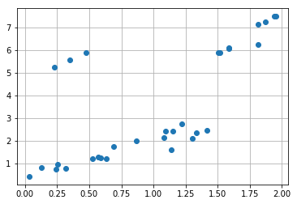

Regularización¶
30 min | Última modificación: Julio 13, 2019.
Definición del problema real¶
Se desea construir un modelo de regresión no lineal para la siguiente muestra de datos de \((x, y)\).
[3]:
import matplotlib.pyplot as plt
%matplotlib inline
x = [1.8131, 0.0318, 1.5181, 0.2522, 0.2440, 1.4175,
1.9538, 1.1506, 1.5042, 1.0798, 1.0915, 0.3173,
1.8157, 1.3352, 1.1399, 0.1276, 0.6909, 0.6331,
0.8671, 0.5867, 1.9373, 1.5842, 0.5707, 0.5285,
1.8708, 1.5870, 1.3027, 1.2181, 0.2318, 0.3471,
0.4763]
d = [7.1568, 0.4351, 5.8980, 0.9654, 0.7383, 2.4500,
7.4851, 2.4401, 5.8941, 2.1366, 2.4431, 0.8058,
6.2531, 2.3671, 1.6199, 0.8230, 1.7403, 1.2172,
1.9868, 1.2564, 7.4922, 6.0645, 1.2978, 1.2245,
7.2532, 6.1206, 2.1076, 2.7601, 5.2678, 5.5783,
5.8991]
plt.plot(x, d, 'o')
plt.grid()

Definición del problema en términos de los datos¶
Se desea construir un modelo no lineal que relacione las variables \(x\) y \(y\).
Metodología¶
Modelo matemático¶
El modelo regresión + MLP se definio como:
\[y_t = \phi^* + \sum_i \phi_i x_i + \sum_{h} \beta_h \cdot \sigma \left(w_h + \sum_{i} w_{i,h} x_i \right) + e_i\]
donde todos los parámetros serían estimados simultáneamente mediante la minimización del error.
Solución numérica inicial¶
[2]:
##
## Parametros
##
H = 3
learning_rate=0.01
max_iter=10000
##
## Datos
##
X = [[u] for u in x]
N = len(X[0])
P = len(X)
X_ = tf.constant(X, dtype=np.float32)
d_ = tf.constant(d, dtype=np.float32, shape=[len(d), 1])
##
## Info pronostico
##
Xpred = np.linspace(np.min(x), np.max(x), 50, dtype=np.float32)
Xpred = [[u] for u in Xpred]
Xpred_ = tf.constant(Xpred)
##
## Parámetros
##
intercept = tf.Variable(0.1 * np.mean(d), dtype=np.float32)
LRparams = tf.Variable(0.1 * np.random.randn(N, 1), dtype=np.float32)
WHOparams = tf.Variable(0.1 * np.random.randn(H, 1), dtype=np.float32)
WIHparams = tf.Variable(0.1 * np.random.randn(N, H), dtype=np.float32)
BHparams = tf.Variable(0.1 * np.random.randn(H, 1), dtype=np.float32)
##
## Propagación de la señal
##
LR_output = tf.matmul(X_, LRparams)
LR_output = tf.add(intercept, LR_output)
In_hidden = tf.add(tf.matmul(X_, WIHparams),
tf.tile(tf.transpose(BHparams), [P, 1]))
Out_hidden = tf.sigmoid(In_hidden)
MLP_output = tf.matmul(Out_hidden, WHOparams)
model_output = tf.add(LR_output, MLP_output)
##
## Función de error
##
# SSE = tf.reduce_sum(tf.square(d_ - model_output)) # sum of the squared errors
SSE = tf.reduce_sum(tf.abs(d_ - model_output)) # sum of the squared errors
##
## Optimizador
##
optimizer = tf.train.GradientDescentOptimizer(learning_rate=learning_rate).minimize(SSE)
##
## Pronostico
##
LR_output = tf.matmul(Xpred_, LRparams)
LR_output = tf.add(intercept, LR_output)
In_hidden = tf.add(tf.matmul(Xpred_, WIHparams),
tf.tile(tf.transpose(BHparams), [len(Xpred), 1]))
Out_hidden = tf.sigmoid(In_hidden)
MLP_output = tf.matmul(Out_hidden, WHOparams)
ypred = tf.add(LR_output, MLP_output)
##
## Ejecución
##
with tf.Session() as sess:
sess.run(tf.global_variables_initializer())
for i in range(max_iter):
sess.run(optimizer)
p = sess.run(ypred)
e = sess.run(SSE)
print('SSE = ', e)
plt.plot(x, d, 'o')
plt.plot(Xpred, p, '-')
plt.grid()
---------------------------------------------------------------------------
NameError Traceback (most recent call last)
<ipython-input-2-7371fe3e5c7f> in <module>
13 P = len(X)
14
---> 15 X_ = tf.constant(X, dtype=np.float32)
16 d_ = tf.constant(d, dtype=np.float32, shape=[len(d), 1])
17
NameError: name 'tf' is not defined
Penalización¶
Se puede modificar la función de error, usando en vez del error cuadrático, el error absoluto.
Se puede adicionar penalizaciones para mejorar el comportamiento del modelo asi:
Ridge Regression
Lasso
Elastic net
Actividad.– Experimente con los parámetros del modelo para analizar si es posible conseguir un ajuste mejor.
[167]:
##
## Parametros
##
H = 8
learning_rate=0.001
max_iter=10000
##
## Datos
##
X = [[u] for u in x]
N = len(X[0])
P = len(X)
X_ = tf.constant(X, dtype=np.float32)
d_ = tf.constant(d, dtype=np.float32, shape=[len(d), 1])
##
## Info pronostico
##
Xpred = np.linspace(np.min(x), np.max(x), 50, dtype=np.float32)
Xpred = [[u] for u in Xpred]
Xpred_ = tf.constant(Xpred)
##
## Parámetros
##
intercept = tf.Variable(0.1 * np.mean(d), dtype=np.float32)
LRparams = tf.Variable(0.1 * np.random.randn(N, 1), dtype=np.float32)
WHOparams = tf.Variable(0.1 * np.random.randn(H, 1), dtype=np.float32)
WIHparams = tf.Variable(0.1 * np.random.randn(N, H), dtype=np.float32)
BHparams = tf.Variable(0.1 * np.random.randn(H, 1), dtype=np.float32)
##
## Propagación de la señal
##
LR_output = tf.matmul(X_, LRparams)
LR_output = tf.add(intercept, LR_output)
In_hidden = tf.add(tf.matmul(X_, WIHparams),
tf.tile(tf.transpose(BHparams), [P, 1]))
Out_hidden = tf.sigmoid(In_hidden)
MLP_output = tf.matmul(Out_hidden, WHOparams)
model_output = tf.add(LR_output, MLP_output)
##
## Función de error
##
SSE = tf.reduce_sum(tf.square(d_ - model_output)) # sum of the squared errors
#SSE = tf.reduce_sum(tf.abs(d_ - model_output)) # sum of the squared errors
PENS0 = tf.square(intercept)
PENS1 = tf.reduce_sum(tf.square(LRparams))
PENS2 = tf.reduce_sum(tf.square(WHOparams))
PENS3 = tf.reduce_sum(tf.square(WIHparams))
PENS4 = tf.reduce_sum(tf.square(BHparams))
PENA0 = tf.abs(intercept)
PENA1 = tf.reduce_sum(tf.abs(LRparams))
PENA2 = tf.reduce_sum(tf.abs(WHOparams))
PENA3 = tf.reduce_sum(tf.abs(WIHparams))
PENA4 = tf.reduce_sum(tf.abs(BHparams))
PENS = tf.add_n([PENS0, PENS1, PENS2, PENS3, PENS4])
PENA = tf.add_n([PENA0, PENA1, PENA2, PENA3, PENA4])
SSE = tf.add(SSE, tf.multiply(0.0000, PENS))
SSE = tf.add(SSE, tf.multiply(0.9000, PENA))
##
## Optimizador
##
optimizer = tf.train.AdamOptimizer(learning_rate=learning_rate).minimize(SSE)
##
## Pronostico
##
LR_output = tf.matmul(Xpred_, LRparams)
LR_output = tf.add(intercept, LR_output)
In_hidden = tf.add(tf.matmul(Xpred_, WIHparams),
tf.tile(tf.transpose(BHparams), [len(Xpred), 1]))
Out_hidden = tf.sigmoid(In_hidden)
MLP_output = tf.matmul(Out_hidden, WHOparams)
ypred = tf.add(LR_output, MLP_output)
##
## Ejecución
##
with tf.Session() as sess:
sess.run(tf.global_variables_initializer())
for i in range(max_iter):
sess.run(optimizer)
p = sess.run(ypred)
e = sess.run(SSE)
print('SSE = ', e)
plt.plot(x, d, 'o')
plt.plot(Xpred, p, '-')
plt.grid()
---------------------------------------------------------------------------
KeyboardInterrupt Traceback (most recent call last)
<ipython-input-167-c5f12653b375> in <module>
89 sess.run(tf.global_variables_initializer())
90 for i in range(max_iter):
---> 91 sess.run(optimizer)
92 p = sess.run(ypred)
93 e = sess.run(SSE)
/usr/local/lib/python3.6/dist-packages/tensorflow/python/client/session.py in run(self, fetches, feed_dict, options, run_metadata)
927 try:
928 result = self._run(None, fetches, feed_dict, options_ptr,
--> 929 run_metadata_ptr)
930 if run_metadata:
931 proto_data = tf_session.TF_GetBuffer(run_metadata_ptr)
/usr/local/lib/python3.6/dist-packages/tensorflow/python/client/session.py in _run(self, handle, fetches, feed_dict, options, run_metadata)
1150 if final_fetches or final_targets or (handle and feed_dict_tensor):
1151 results = self._do_run(handle, final_targets, final_fetches,
-> 1152 feed_dict_tensor, options, run_metadata)
1153 else:
1154 results = []
/usr/local/lib/python3.6/dist-packages/tensorflow/python/client/session.py in _do_run(self, handle, target_list, fetch_list, feed_dict, options, run_metadata)
1326 if handle is None:
1327 return self._do_call(_run_fn, feeds, fetches, targets, options,
-> 1328 run_metadata)
1329 else:
1330 return self._do_call(_prun_fn, handle, feeds, fetches)
/usr/local/lib/python3.6/dist-packages/tensorflow/python/client/session.py in _do_call(self, fn, *args)
1332 def _do_call(self, fn, *args):
1333 try:
-> 1334 return fn(*args)
1335 except errors.OpError as e:
1336 message = compat.as_text(e.message)
/usr/local/lib/python3.6/dist-packages/tensorflow/python/client/session.py in _run_fn(feed_dict, fetch_list, target_list, options, run_metadata)
1317 self._extend_graph()
1318 return self._call_tf_sessionrun(
-> 1319 options, feed_dict, fetch_list, target_list, run_metadata)
1320
1321 def _prun_fn(handle, feed_dict, fetch_list):
/usr/local/lib/python3.6/dist-packages/tensorflow/python/client/session.py in _call_tf_sessionrun(self, options, feed_dict, fetch_list, target_list, run_metadata)
1405 return tf_session.TF_SessionRun_wrapper(
1406 self._session, options, feed_dict, fetch_list, target_list,
-> 1407 run_metadata)
1408
1409 def _call_tf_sessionprun(self, handle, feed_dict, fetch_list):
KeyboardInterrupt: